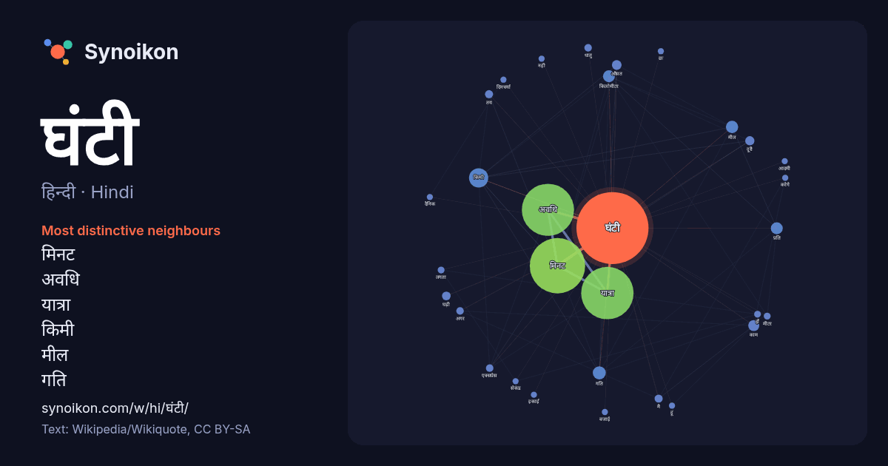

हिन्दी · Hindi · word of the day list
घंटी
“bell” · The words found around it in 723 instances from Hindi Wikipedia, Wikiquote.

Most distinctive neighbours
- मिनट 242×
- अवधि 193×
- यात्रा 187×
- किमी 29×
- मील 14×
- गति 14×
- किलोमीटर 11×
- प्रति 8.6×
- घड़ी 8.5×
- औसत 8.4×
- मै 7.7×
- तय 7.0×
- दूरी 6.9×
- एक्सप्रेस 6.5×
- धातु 6.1×
- काम 5.3×
- अगर 5.2×
- करेगे 5.0×
- बजाई 5.0×
- दिनचर्या 4.9×
× = how many times more often than in general Hindi Wikipedia text.
Most frequent neighbours
- मिनट 325
- यात्रा 291
- अवधि 288
- किमी 39
- गति 18
- मील 16
- किलोमीटर 15
- प्रति 15
- समय 14
- काम 13
- औसत 10
- कम 10
- दूरी 9
- घड़ी 8
- तय 7
- मै 7
- अगर 6
- एक्सप्रेस 6
- दिन 6
- धातु 6
In context
- धर्म में भी घंटे का उपयोग होता और कई गिरजाघर में इसका उपयोग देखा जा सकता है। गरूड़ घंटी : छोटी-सी घंटी जिसे हथ से बजाया जा सकता है। द्वार घंटी : द्वार पर Wikipedia snippets · घंटी
- स्कूल की घंटी बजाई जाती है। अक्सर यह विद्यालय की सबसे छोटी बच्ची होती है जिसे विद्यालय से उत्तीर्ण होने वाला सबसे बड़ा लड़का अपनी गोद में उठाकर घंटी तक ले Wikipedia snippets · अंतिम घंटी
- जलयान की घंटी (अंग्रेज़ी: Ship's Bell) आमतौर पर पीतल का बना होता है तथा इसपे जलयान का नाम छपा होता है। जलयान की घंटी का मुख्य रूप से प्रयोग समय को विनियमित Wikipedia snippets · जलयान की घंटी
- घंटा समय की एक इकाई है। एक घंटा (चिह्न;h/hr) समय की एक इकाई है जिसे परंपरागत रूप से एक दिन के १/२४ के रूप में माना जाता है और वैज्ञानिक रूप से पृथ्वी Wikipedia snippets · घंटा
- किलोमीटर प्रति घंटा (अंग्रेज़ी: Kilometres per hour), गति की एक इकाई हैं, जोकि एक घंटे में की गई यात्रा किलोमीटर की संख्या व्यक्त करता हैं। एसआई यूनिट Wikipedia snippets · किलोमीटर प्रति घंटा
- वॉट घंटा या वॉट आवर (बड़ी ईकाई, किलोवॉट घंटा ; संक्षिप्त रूप kW·h, kW h या kWh)) ( ऊर्जा की इकाई है। इसे प्रायः विद्युत ऊर्जा की खपत की मात्रा के मापन Wikipedia snippets · वॉट घंटा
- २४ घंटा एक बांग्ला टीवी चैनल है। यह एक समाचार चैनल है। Wikipedia snippets · २४ घंटा
- पर यात्रा करती है और दिल्ली और मुंबई के बीच की दूरी को 15 घंटे और 40 मिनट में 91 किमी / घंटा की औसत गति से पूर्ण करती है। 2016 में, स्पेनिश हाई स्पीड रेल Wikipedia snippets · नई दिल्ली-मुंबई मुख्य रेलमार्ग
More Hindi words
- इतिहास
- ईश्वर
- कार्य
- कुत्ता
- गर्मी
- गाना
- घड़ी
- घोड़ा
- चाय
- चित्रकला
- छाया
- जंगल
- जलवायु
- जीवन
- तूफ़ान
- दर्पण
- द्वीप
- नक्षत्र
- नमक
- परिवार
- पहाड़
- पानी
- पैसा
- प्रकृति
- बगीचा
- बिल्ली
- भाषा
- भोजन
- माता
- मानचित्र
- मृत्यु
- मौन
- रेगिस्तान
- रेलगाड़ी
- रोटी
- वर्षा
- विज्ञान
- शक्ति
- शरद
- शहद
- शहर
- सड़क
- सत्य
- समय
- सर्दी
- सेतु
- स्वर्ण
- स्वास्थ्य
- हृदय
Precomputed on 2026-10-09 with default settings (±5 words, medium corpus). The interactive map can refresh it with live data.